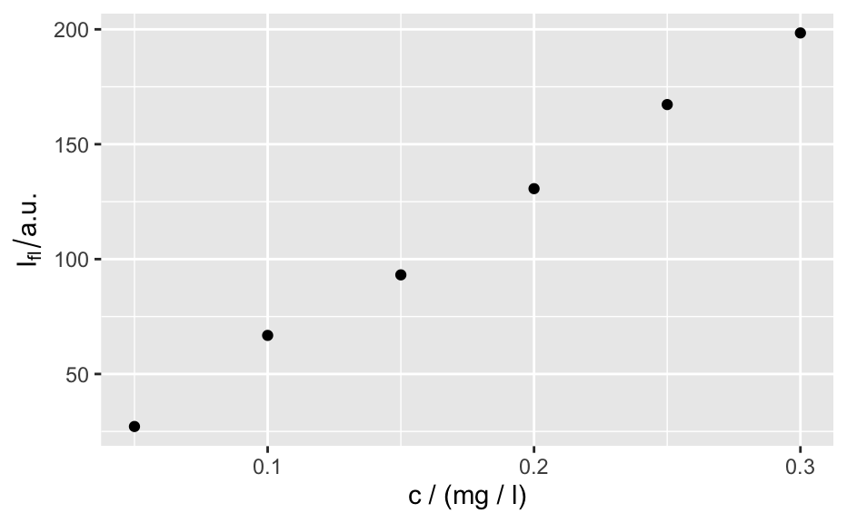
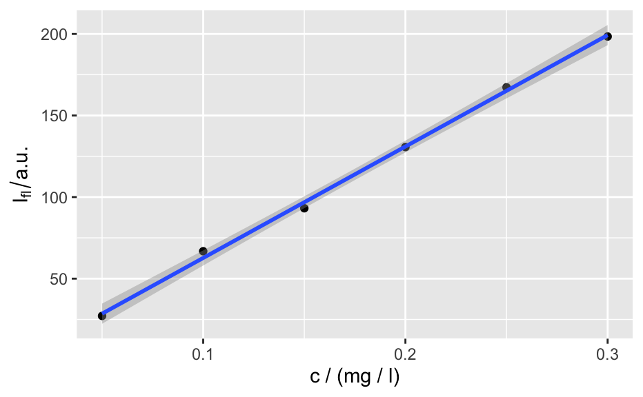

Spectra plotting with ggplot2
qplotc( object, mapping = aes_string(x = "c", y = "spc"), ..., func = NULL, func.args = list(), map.pointonly = FALSE )
| object | hyperSpec object |
|---|---|
| mapping | |
| ... | handed to |
| func | function to summarize the wavelengths, if |
| func.args | arguments to |
| map.pointonly | if |
a ggplot2::ggplot() object
These functions are still experimental and may change in future.
plotc()
Claudia Beleites
qplotc(flu)#> Warning: Intensity at first wavelengh only is used.#> Warning: Intensity at first wavelengh only is used.#>